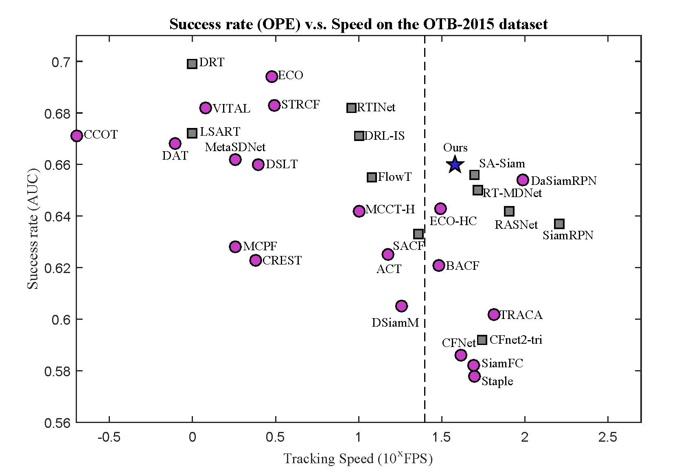

Framework

Abstract
Existing deep trackers mainly use convolutional neural networks pre-trained for generic object recognition task for representations. Despite demonstrated successes for numerous vision tasks, the contributions of using pre-trained deep features for visual tracking are not as significant as that for object recognition. The key issue is that in visual tracking the targets of interest can be arbitrary object class with arbitrary forms. As such, pre-trained deep features are less effective in modeling these targets of arbitrary forms for distinguishing them from the background. In this paper, we propose a novel scheme to learn target-aware features, which can better recognize the targets undergoing significant appearance variations than pre-trained deep features. To this end, we develop a regression loss and a ranking loss to guide the generation of target-active and scale-sensitive features. We identify the importance of each convolutional filter according to the back-propagated gradients and select the target-aware features based on activations for representing the targets. The target-aware features are integrated with a Siamese matching network for visual tracking. Extensive experimental results show that the proposed algorithm performs favorably against the state-of-the-art methods in terms of accuracy and speed.
Results


Demo
Download
Paper:
[Paper] [Supplementary materials]
Raw results:
codes:
Bibtex
@inproceedings{TADT,
author = {Li, Xin and Ma, Chao and Wu, Baoyuan and He, Zhenyu and Yang, Ming-Hsuan},
title = {Target-Aware Deep Tracking},
booktitle = {IEEE Conference on Computer Vision and Pattern Recognition},
year = {2019}
}